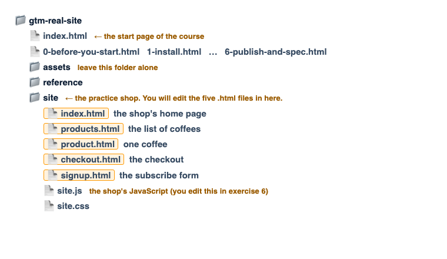

Tag Manager on a real site
You get a small practice web shop. You put Google Tag Manager on it yourself, and then you build the tracking for it, one step at a time. At the end, real data arrives in Google Analytics.
Some words you will see everywhere
Google Tag Manager (we will just say Tag Manager) is a free tool from Google. You put one small piece of code on your website, once. After that you add all your tracking through Tag Manager's own website, without editing your site again.
A container is your workspace in Tag Manager for one website. Everything you build lives inside
it. Every container has an ID that looks like GTM-ABC1234.
The snippet is the small piece of code Tag Manager gives you for your website. It comes in two parts, and you paste both into every page of the site.
Inside a container you build three kinds of things. A tag is something that runs, for example "send this to Google Analytics". A trigger is the rule for when a tag runs, for example "when someone clicks Add to cart". A variable is a value Tag Manager can read, for example the name of the product that was added.
Google Analytics 4, or GA4, is Google's free reporting tool. Tag Manager sends the data there, and that is where you look at it.
The dataLayer is a list on the web page where the website's own code puts information for Tag Manager to read, such as "this is a product page" or "this order cost 438 kr". It is the most important idea in this course.
What is in the folder you downloaded
The folder is called gtm-real-site. The page you are reading now is index.html
at the top of it. The practice shop is in the folder called site.

How to work through the course
Do Before you start first. It walks you through creating a Tag Manager container, a Google Analytics property, and putting this folder online. You cannot do the exercises without these.
Then do the six exercises in order. Each one tells you what it is for, exactly what to click, and what you should see when it works.
Keep the practice shop open in a second browser tab. The links are in the box on the right.
The exercises
- 0Before you start: accounts and putting the folder onlineSetup
- 1Put Tag Manager on the shopThe snippet
- 2Read information the shop puts in the dataLayerVariables
- 3Track clicks and a formTriggers and tags
- 4Track the shop: products, cart and ordersEcommerce
- 5Send the same information with every eventSettings
- 6Go live, and ask a developer for what is missingPublish
The practice shop
It is called Fika & Co and it sells coffee. Nothing is real: no coffee is sold, no email is sent, no money is charged. It has five pages, listed in the box on the right.

The practice shop
The exercises happen on these five pages. Each link opens in a new tab.
- 1Home pagecta_click, login
- 2All coffeesview_item_list, select_item
- 3One coffeeview_item, add_to_cart
- 4Checkoutbegin_checkout, purchase
- 5Subscribe formgenerate_lead
At the bottom of every shop page there is a grey line that says Developer view. Click it to see the dataLayer and which containers are running.